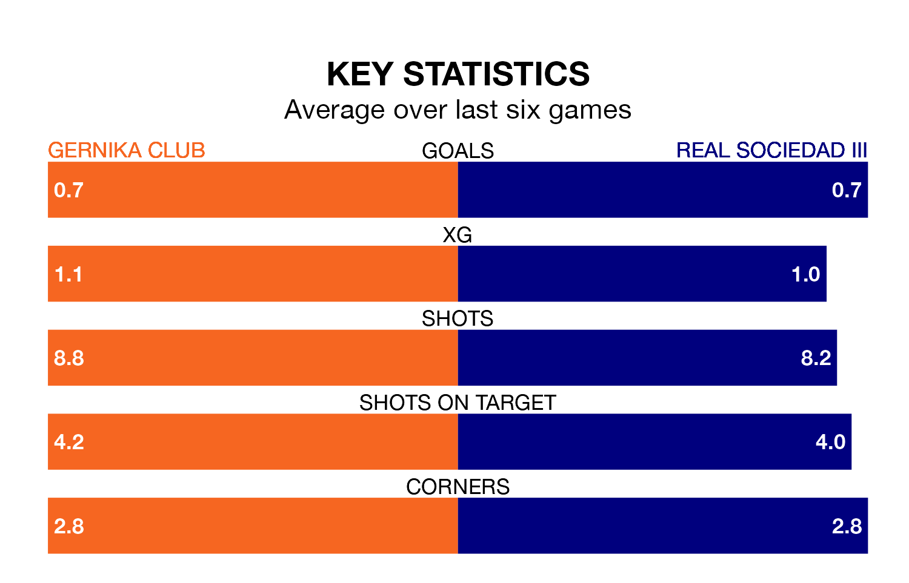

Real Sociedad III travel to Gernika Club on Sunday in the Segunda División RFEF Group 2.
The visitors come into the game on the back of a draw in their last match, having tied with Utebo 0-0 at home.
Gernika Club, meanwhile, lost their last match, 2-1 against Náxara CD, with their goal scored by Josu Gallastegui Garate.
In the last 10 years, Gernika Club and Sociedad III have played each other on nine occasions. Gernika Club won five of them, Sociedad III three, and they drew once.
On average, Gernika Club scored 1.3 goals and Sociedad III 1.2 in those matches.
Their last meeting was on November 18, when Sociedad III won 2-0 at home.
With 28 goals in 28 games so far this season, Sociedad III are scoring at below the league average rate with 1.0 goals per game. But they are conceding fewer than average too, letting in 28 goals at a rate of 1.0 per game.
Gernika Club are also below average scorers, with 1.0 goal per game, compared to a league average of 1.1. They have conceded 1.5 goals per game.
The home side are in mixed form in the Segunda División RFEF Group 2, with two wins and a draw from their last six games.
With a win and three draws over that period, the visitors' form is slightly worse – they have taken six points from 18, compared to Gernika Club's seven.
Sociedad III are seventh in the table after 28 games, of which they have won 10 and drawn nine, earning 39 points.
Gernika Club are four places behind Sociedad III in 11th, with eight wins and 10 draws putting them on 34 points.
Updated: 10:31 (UTC), 31/03/24